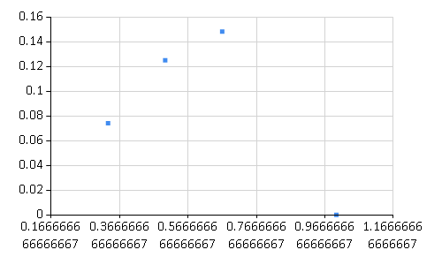

Estimation
F# code for Estimation unit.
Emprirical
Empirical evidence (also empirical data, sense experience, empirical knowledge, or the a posteriori) is a source of knowledge acquired by means of observation or experimentation.
Maximum Likelihood Estimator (MLE)
Estimation problem is: Data -> p -> P(DATA)
101*
1: 2: 3: |
let ``list of p`` = [|1./2.;1./3.;2./3.;1.|] let ``list of P(data)`` = ``list of p`` |> Array.map (fun p -> p, (p*(1.-p)*p)) |
0.125
0.07407407407
0.1481481481
0.0
1:
|
Chart.Point(``list of P(data)``) |

2/3 is MLE.
Laplacian Estimator
Laplacian Estimator improves estimation by adding fake data to limited observation data.
Dices examples
1: 2: 3: 4: 5: 6: 7: 8: 9: |
let data = [1;2;3;2] let data' = [1;2;3;4;5;6] let ``MLE P(n)`` n = float(data|> Seq.filter ((=)n) |> Seq.length)/float(data |> Seq.length) let ``LE P(n)`` n = float(data@data'|> Seq.filter ((=)n) |> Seq.length)/float(data@data' |> Seq.length) let ``MLE vs. LE`` = [1;2;3;4;5;6] |> List.map (fun n -> ``MLE P(n)`` n, ``LE P(n)`` n) |
[(0.25, 0.2); (0.5, 0.3); (0.25, 0.2); (0.0, 0.1); (0.0, 0.1); (0.0, 0.1)]
MLE: \(\frac{1}{N}\sum_{i=1}^Nx_i\)
LE: \(\frac{1}{N+K}(1+\sum_{i=1}^Nx_i)\)
When there is not much data, FAKE IT
val ( list of p ) : float []
Full name: 13-Estimation.( list of p )
Full name: 13-Estimation.( list of p )
val ( list of P(data) ) : (float * float) []
Full name: 13-Estimation.( list of P(data) )
Full name: 13-Estimation.( list of P(data) )
module Array
from Microsoft.FSharp.Collections
from Microsoft.FSharp.Collections
val map : mapping:('T -> 'U) -> array:'T [] -> 'U []
Full name: Microsoft.FSharp.Collections.Array.map
Full name: Microsoft.FSharp.Collections.Array.map
val p : float
type Chart =
static member Area : data:seq<#value> * ?Name:string * ?Title:string * ?Labels:#seq<string> * ?Color:Color * ?XTitle:string * ?YTitle:string -> GenericChart
static member Area : data:seq<#key * #value> * ?Name:string * ?Title:string * ?Labels:#seq<string> * ?Color:Color * ?XTitle:string * ?YTitle:string -> GenericChart
static member Bar : data:seq<#value> * ?Name:string * ?Title:string * ?Labels:#seq<string> * ?Color:Color * ?XTitle:string * ?YTitle:string -> GenericChart
static member Bar : data:seq<#key * #value> * ?Name:string * ?Title:string * ?Labels:#seq<string> * ?Color:Color * ?XTitle:string * ?YTitle:string -> GenericChart
static member BoxPlotFromData : data:seq<#key * #seq<'a2>> * ?Name:string * ?Title:string * ?Color:Color * ?XTitle:string * ?YTitle:string * ?Percentile:int * ?ShowAverage:bool * ?ShowMedian:bool * ?ShowUnusualValues:bool * ?WhiskerPercentile:int -> GenericChart (requires 'a2 :> value)
static member BoxPlotFromStatistics : data:seq<#key * #value * #value * #value * #value * #value * #value> * ?Name:string * ?Title:string * ?Labels:#seq<string> * ?Color:Color * ?XTitle:string * ?YTitle:string * ?Percentile:int * ?ShowAverage:bool * ?ShowMedian:bool * ?ShowUnusualValues:bool * ?WhiskerPercentile:int -> GenericChart
static member Bubble : data:seq<#value * #value> * ?Name:string * ?Title:string * ?Labels:#seq<string> * ?Color:Color * ?XTitle:string * ?YTitle:string * ?BubbleMaxSize:int * ?BubbleMinSize:int * ?BubbleScaleMax:float * ?BubbleScaleMin:float * ?UseSizeForLabel:bool -> GenericChart
static member Bubble : data:seq<#key * #value * #value> * ?Name:string * ?Title:string * ?Labels:#seq<string> * ?Color:Color * ?XTitle:string * ?YTitle:string * ?BubbleMaxSize:int * ?BubbleMinSize:int * ?BubbleScaleMax:float * ?BubbleScaleMin:float * ?UseSizeForLabel:bool -> GenericChart
static member Candlestick : data:seq<#value * #value * #value * #value> * ?Name:string * ?Title:string * ?Labels:#seq<string> * ?Color:Color * ?XTitle:string * ?YTitle:string -> CandlestickChart
static member Candlestick : data:seq<#key * #value * #value * #value * #value> * ?Name:string * ?Title:string * ?Labels:#seq<string> * ?Color:Color * ?XTitle:string * ?YTitle:string -> CandlestickChart
...
Full name: FSharp.Charting.Chart
static member Area : data:seq<#value> * ?Name:string * ?Title:string * ?Labels:#seq<string> * ?Color:Color * ?XTitle:string * ?YTitle:string -> GenericChart
static member Area : data:seq<#key * #value> * ?Name:string * ?Title:string * ?Labels:#seq<string> * ?Color:Color * ?XTitle:string * ?YTitle:string -> GenericChart
static member Bar : data:seq<#value> * ?Name:string * ?Title:string * ?Labels:#seq<string> * ?Color:Color * ?XTitle:string * ?YTitle:string -> GenericChart
static member Bar : data:seq<#key * #value> * ?Name:string * ?Title:string * ?Labels:#seq<string> * ?Color:Color * ?XTitle:string * ?YTitle:string -> GenericChart
static member BoxPlotFromData : data:seq<#key * #seq<'a2>> * ?Name:string * ?Title:string * ?Color:Color * ?XTitle:string * ?YTitle:string * ?Percentile:int * ?ShowAverage:bool * ?ShowMedian:bool * ?ShowUnusualValues:bool * ?WhiskerPercentile:int -> GenericChart (requires 'a2 :> value)
static member BoxPlotFromStatistics : data:seq<#key * #value * #value * #value * #value * #value * #value> * ?Name:string * ?Title:string * ?Labels:#seq<string> * ?Color:Color * ?XTitle:string * ?YTitle:string * ?Percentile:int * ?ShowAverage:bool * ?ShowMedian:bool * ?ShowUnusualValues:bool * ?WhiskerPercentile:int -> GenericChart
static member Bubble : data:seq<#value * #value> * ?Name:string * ?Title:string * ?Labels:#seq<string> * ?Color:Color * ?XTitle:string * ?YTitle:string * ?BubbleMaxSize:int * ?BubbleMinSize:int * ?BubbleScaleMax:float * ?BubbleScaleMin:float * ?UseSizeForLabel:bool -> GenericChart
static member Bubble : data:seq<#key * #value * #value> * ?Name:string * ?Title:string * ?Labels:#seq<string> * ?Color:Color * ?XTitle:string * ?YTitle:string * ?BubbleMaxSize:int * ?BubbleMinSize:int * ?BubbleScaleMax:float * ?BubbleScaleMin:float * ?UseSizeForLabel:bool -> GenericChart
static member Candlestick : data:seq<#value * #value * #value * #value> * ?Name:string * ?Title:string * ?Labels:#seq<string> * ?Color:Color * ?XTitle:string * ?YTitle:string -> CandlestickChart
static member Candlestick : data:seq<#key * #value * #value * #value * #value> * ?Name:string * ?Title:string * ?Labels:#seq<string> * ?Color:Color * ?XTitle:string * ?YTitle:string -> CandlestickChart
...
Full name: FSharp.Charting.Chart
static member Chart.Point : data:seq<#value> * ?Name:string * ?Title:string * ?Labels:#seq<string> * ?Color:System.Drawing.Color * ?XTitle:string * ?YTitle:string * ?MarkerColor:System.Drawing.Color * ?MarkerSize:int -> ChartTypes.GenericChart
static member Chart.Point : data:seq<#key * #value> * ?Name:string * ?Title:string * ?Labels:#seq<string> * ?Color:System.Drawing.Color * ?XTitle:string * ?YTitle:string * ?MarkerColor:System.Drawing.Color * ?MarkerSize:int -> ChartTypes.GenericChart
static member Chart.Point : data:seq<#key * #value> * ?Name:string * ?Title:string * ?Labels:#seq<string> * ?Color:System.Drawing.Color * ?XTitle:string * ?YTitle:string * ?MarkerColor:System.Drawing.Color * ?MarkerSize:int -> ChartTypes.GenericChart
val data : int list
Full name: 13-Estimation.data
Full name: 13-Estimation.data
val data' : int list
Full name: 13-Estimation.data'
Full name: 13-Estimation.data'
val ( MLE P(n) ) : n:int -> float
Full name: 13-Estimation.( MLE P(n) )
Full name: 13-Estimation.( MLE P(n) )
val n : int
Multiple items
val float : value:'T -> float (requires member op_Explicit)
Full name: Microsoft.FSharp.Core.Operators.float
--------------------
type float = System.Double
Full name: Microsoft.FSharp.Core.float
--------------------
type float<'Measure> = float
Full name: Microsoft.FSharp.Core.float<_>
val float : value:'T -> float (requires member op_Explicit)
Full name: Microsoft.FSharp.Core.Operators.float
--------------------
type float = System.Double
Full name: Microsoft.FSharp.Core.float
--------------------
type float<'Measure> = float
Full name: Microsoft.FSharp.Core.float<_>
module Seq
from Microsoft.FSharp.Collections
from Microsoft.FSharp.Collections
val filter : predicate:('T -> bool) -> source:seq<'T> -> seq<'T>
Full name: Microsoft.FSharp.Collections.Seq.filter
Full name: Microsoft.FSharp.Collections.Seq.filter
val length : source:seq<'T> -> int
Full name: Microsoft.FSharp.Collections.Seq.length
Full name: Microsoft.FSharp.Collections.Seq.length
val ( LE P(n) ) : n:int -> float
Full name: 13-Estimation.( LE P(n) )
Full name: 13-Estimation.( LE P(n) )
val ( MLE vs. LE ) : (float * float) list
Full name: 13-Estimation.( MLE vs. LE )
Full name: 13-Estimation.( MLE vs. LE )
Multiple items
module List
from Microsoft.FSharp.Collections
--------------------
type List<'T> =
| ( [] )
| ( :: ) of Head: 'T * Tail: 'T list
interface IEnumerable
interface IEnumerable<'T>
member Head : 'T
member IsEmpty : bool
member Item : index:int -> 'T with get
member Length : int
member Tail : 'T list
static member Cons : head:'T * tail:'T list -> 'T list
static member Empty : 'T list
Full name: Microsoft.FSharp.Collections.List<_>
module List
from Microsoft.FSharp.Collections
--------------------
type List<'T> =
| ( [] )
| ( :: ) of Head: 'T * Tail: 'T list
interface IEnumerable
interface IEnumerable<'T>
member Head : 'T
member IsEmpty : bool
member Item : index:int -> 'T with get
member Length : int
member Tail : 'T list
static member Cons : head:'T * tail:'T list -> 'T list
static member Empty : 'T list
Full name: Microsoft.FSharp.Collections.List<_>
val map : mapping:('T -> 'U) -> list:'T list -> 'U list
Full name: Microsoft.FSharp.Collections.List.map
Full name: Microsoft.FSharp.Collections.List.map